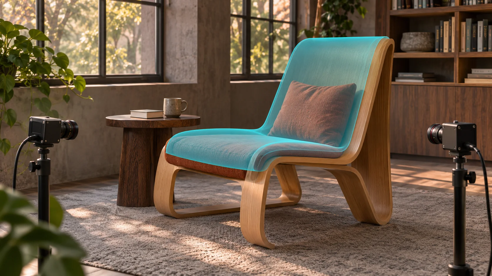

Physical AI & 3D Understanding
Bringing geometry and cross-view consistency into visual learning, so that models can understand scene structure and learn multiple dense prediction tasks together.
- 3D Geometry
- Scene Understanding
- Multi-view Learning
